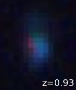

|

This galaxy is younger than the other, and also farther away from us. It is seen as it was when the universe was only 6 billion years old. Even though this is a fairly bright galaxy, with current telescopes and adaptive optics it would be too faint to see if it were as far back as 1 billion years after the Big Bang (approximately z=5). For that we will need the next generation of giant telescopes.
|